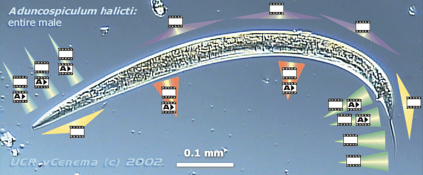

Aduncospiculum halicti
Giblin and Kaya, 1984
Source:
Cultured strain JB120 kept at UC-Riverside
Image map of male morphology
Click on
to see the corresponding clip with annotation
Click on
to see the corresponding clip without annotation
